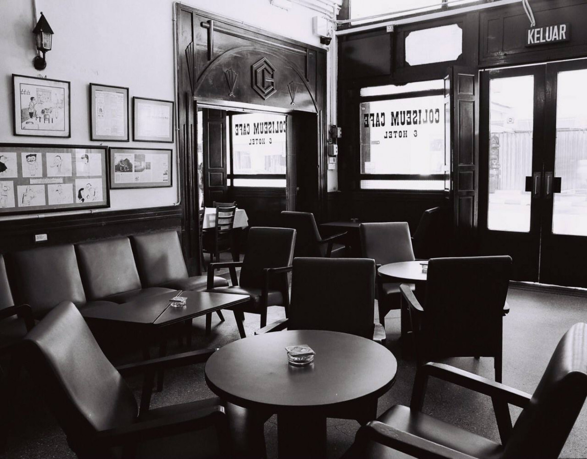

Our business was founded in 1890 as a small pop-up shop run by the Angelo family, the café was named simply Ko-Fi and was located in Coliseum in Kuala Lumpur. In 2019 after the COVID-19 outbreak, the owners decided to change the name and logo to Ko-Wi-Fi and franchise its brand to many different ranchisees around Malaysia. With the name change came a change of operations, including new ways to ensure as many people as possible can fill their cups with our delicious brews.
